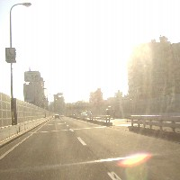
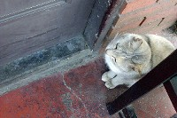
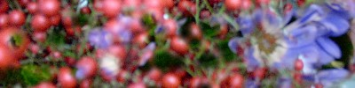
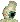
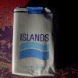
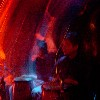
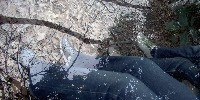

|
 |
#首都高目黒線 - 80km/h |
| 2002.12 / 2003.2 |

#最近読んだ本（とマンガ）

#きのう眼科に行きました。ものもらいだそーで、目薬中です。
#会社の近くで売ってるこのタバコを大体いっつも吸っています。今日タバコ屋に行ったら、おばちゃんに「そのタバコ買ってくのあんただけよ」とか言われました。コレ売ってるのは自分の今知る限りだと会社の近くのタバコ屋と、西荻の友達の家の近くしかないです。アイランド(スーパーライト)の好きな方いらっしゃいましたら、連絡下さい。 |
#吉祥寺のマンダラ昼の部で、友達の参加してるGPNZってバンドを見てきました。見るの2回目だけど、エレクトリックジャズファンクっつーのかな？前回見たときほどのテンションは無かったんですけど、今回はコンガの音も良く聞こえました。次回は吉祥寺シルバーエレファントでやるそうです。プログレとして認知されたのか知ら。 |

んで、一緒に見に行った別の友達と井の頭公園をブラブラしてから、吉祥寺ディスクユニオンへ。Faust/Faust IVを買いました。ファウストだと思うと非常にわかりやすくてかっちょいい内容。フツーにサイコ―な感じです。Zappiの「全然跳ねないドラム」がかっちょいい。